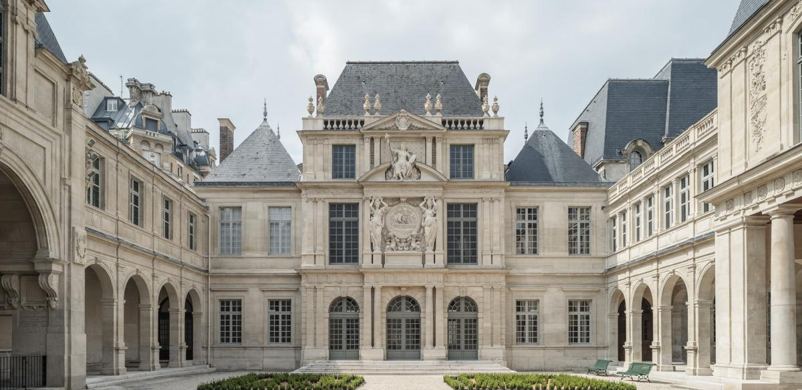
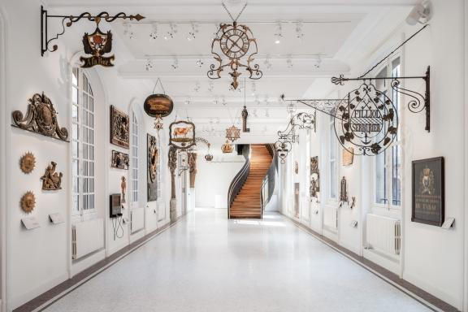
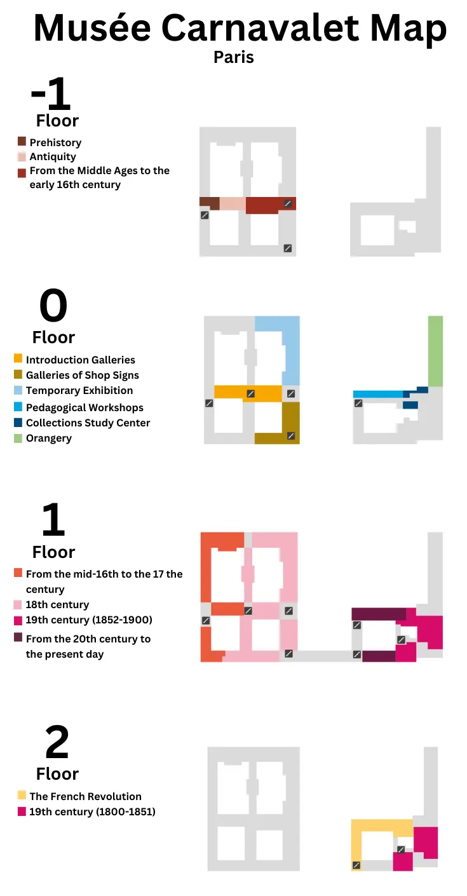

Welcome to the Musée Carnavelet! This tour will take you through three major themes: the French Revolution, the 1871 Commune, and the Student Protests of 1968. You will have the opportunity to look at all different types of art and engage with your classmates through reflection questions. Use this website to click through and guide your exploration of the museum. Please reference below for directions to get to your first exhibit, the French Revolution! Enjoy! *Directions:* When you enter the museum, find each of the following exhibits: French Revolution, 1871 Commune, and the Student Protests of 1968 (map provided below). The French Revolution is on the second floor and is indicated by the yellow zone on the map. Within each exhibit, we selected a few pieces that summarize the larger themes, events, and important figures of each time period. Listen to the provided audio recording for each artwork and begin thinking critically about the important political and philosophical ideas presented by that specific piece. Reflection questions will be provided at the bottom of each theme to promote conversation between your peers and deepen your understanding of the artwork and our class themes. There will be three questions per exhibit, but you must answer at least **one** per section. Please reference the Google Doc linked below to fill in your responses. *Museum Map:*
